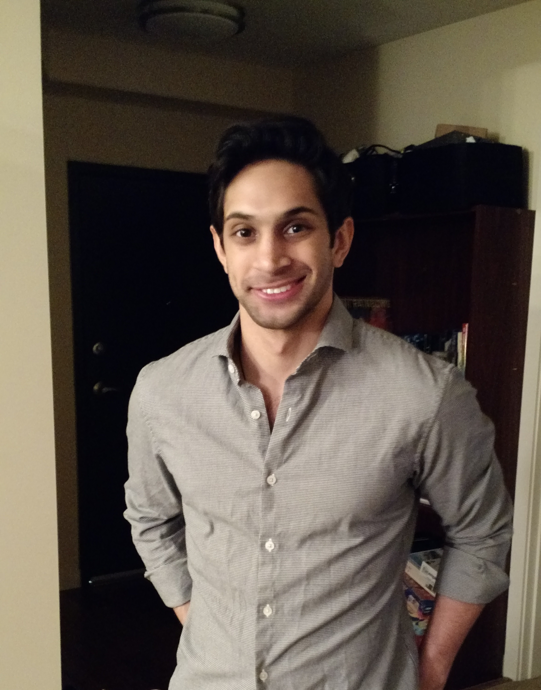

My name is Sorabh Gupta, but I usually go by Rabh. I'm currently a student at Georgia Tech studying Computational Media. I plan on graduating in May 2020, and will be looking for work in film & television, and UI/UX development and design.
I like to think of myself as highly adaptable with strong time management skills and work ethic. I also like to think of myself as approachable and easy-going.
Work Experience
Aug 2011-Dec 2012
I worked at Accenture as a Software Engineer where I:- Developed and delivered technology-based solutions to clients across various industries.
- Coded, tested, and implemented configuration changes utilizing CRM best practices.
- Engaged on an ERP Peoplesoft Financials Management Solutions (FMS) project, resulting in a more streamlined budgeting site for end users.
Jan 2013-Jun 2015
I was at PTC working as a Global Services Consultant where I:- Presented analyses to key stakeholders regarding their business process, risk and issues, and pain points.
- Built a statement of work that included scope, phase planning, resource estimation, schedule and timeline, and workflow.
- Found, tested, and tracked defects between auto-generated content and legacy data to accurately and efficiently digitize client support documentation.
- Led my team to ensure time, effective, and coordinated development rollouts by establishing attainable, realistic, and manageable goals and deadlines.
Reach out if you're interested! I'm very timely with my responses.
